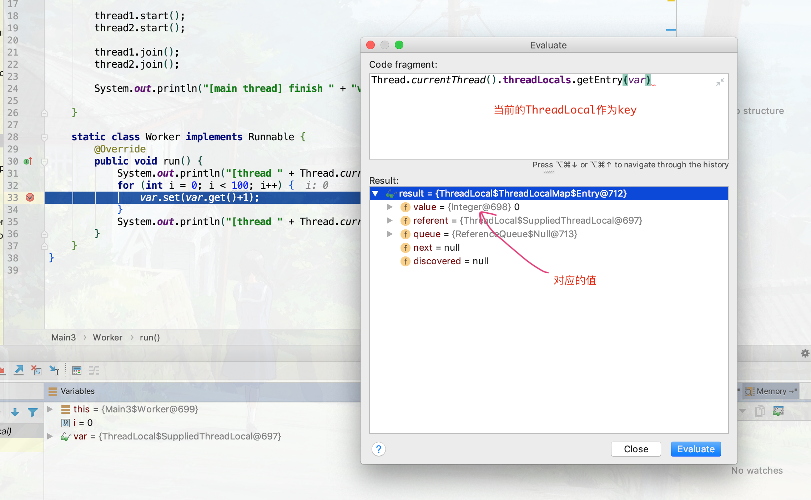

最近在补习计算机基础知识，介绍到线程结构时介绍到了TLS（Thread Local Storage），之前完全不知道，就去补习了一下。
概念 在父线程中创建的变量，子线程可以拥有一个副本；子线程对其值的修改对父线程没有影响。
C语言版本: __thread 编译器使用gcc，使用关键词 __thread 标记TLS变量。
声明一个全局变量 var，并标注为TLS类型，在种子线程中对其进行加法运算，最后输出两个子线程以及主线程 var 的值。
1 2 3 4 5 6 7 8 9 10 11 12 13 14 15 16 17 18 19 20 21 22 23 24 25 26 27 28 29 30 31 #include <pthread.h> #include <stdio.h> __thread int var = 0 ; void * worker (void * arg) int main () pthread_t pid1, pid2; pthread_create(&pid1, NULL , worker, (void *) 0 ); pthread_create(&pid2, NULL , worker, (void *) 1 ); pthread_join(pid1, NULL ); pthread_join(pid2, NULL ); printf ("[main thread] var=%d\n" , var); return 0 ; } void * worker (void * arg) int idx = (int )arg; printf ("[thread %d] init var=%d\n" , idx, var); while (++var < 100 ){} printf ("[thread %d] finish var=%d\n" , idx, var); return NULL ; }
结果如下，三线程都拥有了变量var的一个副本，对其操作对彼此互不影响。
1 2 3 4 5 [thread 0] init var=0 [thread 0] finish var=100 [thread 1] init var=0 [thread 1] finish var=100 [main thread] var=0
Java版本实现: ThreadLocal Java中使用 ThreadLocal类实现，分别使用 get 和 set 方法获取和设置数值，通过 remove 方法移除该值，通过重写 initialValue 来赋初值
1 2 3 4 5 6 7 8 9 10 11 12 13 14 15 16 17 18 19 20 21 22 23 24 25 26 27 28 29 30 public class Main static ThreadLocal<Integer> var = ThreadLocal.withInitial(() -> 0 ); public static void main (String[] args) throws InterruptedException Thread thread1 = new Thread(new Worker()); Thread thread2 = new Thread(new Worker()); thread1.start(); thread2.start(); thread1.join(); thread2.join(); System.out.println("[main thread] finish " + "var=" + var.get()); } static class Worker implements Runnable @Override public void run () System.out.println("[thread " + Thread.currentThread().getId() + "] init var=" + var.get()); for (int i = 0 ; i < 100 ; i++) { var.set(var.get()+1 ); } System.out.println("[thread " + Thread.currentThread().getId() + "] finish var=" + var.get()); } } }
输出结果C语言版本类似
1 2 3 4 5 [thread 11] init var=0 [thread 12] init var=0 [thread 11] finish var=100 [thread 12] finish var=100 [main thread] finish var=0
–
ThreadLocal原理 通过阅读源码发现，Thread 类有一个Field为 threadLocals，类型为 ThreadLocal.ThreadLocalMap。
对于 ThreadLocal.ThreadLocalMap，其为 ThreadLocal 的内部静态类，查看它的源码，它的key类型为WeakReference<ThreadLocal<T>，而value为TLS所赋的值，源码如下，有删减
1 2 3 4 5 6 7 8 9 10 11 12 13 14 15 16 17 18 19 20 21 22 23 24 25 26 27 28 29 30 31 32 33 34 35 36 37 38 39 40 41 42 43 44 45 46 47 48 49 50 51 52 53 54 55 56 57 58 59 60 61 62 63 64 65 66 67 68 69 70 71 72 73 74 75 76 public class ThreadLocal <T > static class ThreadLocalMap private Entry[] table; private static final int INITIAL_CAPACITY = 16 ; static class Entry extends WeakReference <ThreadLocal <?>> Object value; Entry(ThreadLocal<?> k, Object v) { super (k); value = v; } } ThreadLocalMap(ThreadLocal<?> firstKey, Object firstValue) { table = new Entry[INITIAL_CAPACITY]; int i = firstKey.threadLocalHashCode & (INITIAL_CAPACITY - 1 ); table[i] = new Entry(firstKey, firstValue); size = 1 ; setThreshold(INITIAL_CAPACITY); } } ThreadLocalMap getMap (Thread t) { return t.threadLocals; } public T get () Thread t = Thread.currentThread(); ThreadLocalMap map = getMap(t); if (map != null ) { ThreadLocalMap.Entry e = map.getEntry(this ); if (e != null ) { @SuppressWarnings ("unchecked" ) T result = (T)e.value; return result; } } return setInitialValue(); } private T setInitialValue () T value = initialValue(); Thread t = Thread.currentThread(); ThreadLocalMap map = getMap(t); if (map != null ) map.set(this , value); else createMap(t, value); return value; } public void set (T value) Thread t = Thread.currentThread(); ThreadLocalMap map = getMap(t); if (map != null ) map.set(this , value); else createMap(t, value); } }
也就是说
每一个 Thread class都有一个ThreadLocalMap类型的 threadLocals field
ThreadLocalMap 中存储键值对的数组元素Entry继承自 WeakReference<ThreadLocal>每次都是通过 ThreadLocal 作为 key 来获取当前Thread中ThreadLocalMap对应的value值的

使用线程池出现的问题 代码实例 前面已经写过，所有的数据最终是绑定到 Thread 的 threadLocals 上的，而线程池中的线程是可以重用的，如果说线程池最大线程数比创建的线程小的话，那么启动的某些线程任务可能使用相同的线程对象
把之前的代码改造一下，线程池设为1，启动两个任务，那么这两个任务公用一个线程对象
1 2 3 4 5 6 7 8 9 10 11 12 13 public class Main3 static ThreadLocal<Integer> var = ThreadLocal.withInitial(() -> 0 ); public static void main (String[] args) throws InterruptedException ExecutorService executor = Executors.newFixedThreadPool(1 ); executor.execute(new Worker()); executor.execute(new Worker()); executor.shutdown(); executor.awaitTermination(Long.MAX_VALUE, TimeUnit.NANOSECONDS); System.out.println("[main thread] finish " + "var=" + var.get()); } }
结果如下
1 2 3 4 5 [thread 11] init var=0 [thread 11] finish var=100 [thread 11] init var=100 [thread 11] finish var=200 [main thread] finish var=0
可以看到，两个任务其实使用了一个线程，所有使用的ThreadLocal就是相同的
解决方案 怎么解决呢，自定义线程池，在让线程执行任务前将其 threadLocals 置为null
1 2 3 4 5 6 7 8 9 10 11 12 13 14 15 16 17 18 19 20 class MyThreadPool extends ThreadPoolExecutor public MyThreadPool (int corePoolSize, int maximumPoolSize, long keepAliveTime, TimeUnit unit, BlockingQueue<Runnable> workQueue) super (corePoolSize, maximumPoolSize, keepAliveTime, unit, workQueue); } @Override protected void beforeExecute (Thread t, Runnable r) try { Field f = t.getClass().getDeclaredField("threadLocals" ); f.setAccessible(true ); f.set(t, null ); } catch (Exception e) { e.printStackTrace(); } super .beforeExecute(t, r); } }
详细见这篇文章 Java编程的逻辑 (82) - 理解ThreadLocal
实际运用 看了这篇文章觉得好厉害，但是觉得目前还用不到，先mark一下
通向架构师的道路（第七天）之漫谈使用 ThreadLocal 改进你的层次的划分